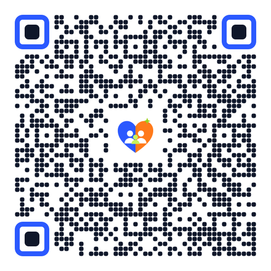

Baixar o Guardian para Android.
Instale o mesmo arquivo no celular do responsável e no da criança. No primeiro acesso, cada aparelho escolhe o seu papel.

Está no computador? Aponte a câmera do celular para baixar direto nele.
Versão oficial
Para usar de verdade. Cria conta, sincroniza pela internet e aplica as regras no celular da criança.
- Conta do responsável com e-mail e senha
- Limites, rotinas e créditos aplicados no aparelho
- Avisa quando sai uma versão nova, dentro do app
Versão de teste
Para conhecer as telas. Funciona sem internet, com dados de exemplo, e não bloqueia nada de verdade.
demo@guardiao.app
Senha: demo1234
Código para vincular: DEMX2345
Como instalar o arquivo APK.
Abra o arquivo baixado
Toque na notificação de download ou procure por "guardiao.apk" na pasta Downloads.
Permita a instalação
O Android pergunta se o navegador pode instalar apps. Toque em Configurações, ative a permissão e volte.
Toque em Instalar
Depois abra o Guardian. No celular da criança, ele pede as permissões de uso e de sobreposição para poder bloquear.
Dúvidas comuns.
Por que o Android mostra um aviso ao instalar?
Porque o arquivo vem de fora da Play Store. O aviso aparece para qualquer APK baixado pelo navegador. O código do Guardian é aberto e fica no GitHub.
Preciso baixar um app para o responsável e outro para a criança?
Não. O arquivo é o mesmo. Ao abrir pela primeira vez, você escolhe "Sou o responsável" ou "É do meu filho ou filha".
A versão de teste bloqueia os apps do meu celular?
Não. Ela usa dados de exemplo guardados só na memória e serve para navegar pelas telas. Ao fechar o app, tudo volta ao início.
Posso ter a versão oficial e a de teste no mesmo celular?
Não ao mesmo tempo. As duas usam o mesmo nome de pacote, então o Android pede para desinstalar uma antes de instalar a outra.
Funciona no iPhone?
Ainda não. Hoje o Guardian roda em Android, e há uma versão para computadores com Windows no repositório do projeto.
Procura uma versão anterior? Todas ficam na página de versões no GitHub.